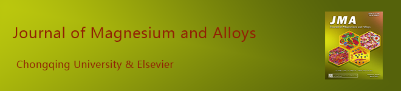

|

Guide for Authors
| Submit Your Articles
| Create E-alerts
| Table of Contents, Volume 9, Issue 1 |
|
The 2021 first issue of Journal of Magnesium and Alloys
published 4 review articles and 22 research articles. The journal is open-access so the articles below are freely accessible. We hope these articles will be useful reference for your future work.
|
Volume 9, Issue 1, 15 January 2021, Page ii View: PDF | DOI |
| Review article |
 |
Guohua Wu, Cunlong Wang, Ming Sun, Wenjiang Ding
Volume 9, Issue 1, 15 January 2021, Pages 1-20 View: PDF | DOI |
 |
Razieh Chaharmahali, Arash Fattah-alhosseini, Kazem Babaei
Volume 9, Issue 1, 15 January 2021, Pages 21-40 View: PDF | DOI |
 |
Jinshu Xie, Jinghuai Zhang, Zihao You, Shujuan Liu, ... Jing Feng
Volume 9, Issue 1, 15 January 2021, Pages 41-56 View: PDF | DOI |
 |
K.B. Nie, X.J. Wang, K.K. Deng, X.S. Hu, K. Wu
Volume 9, Issue 1, 15 January 2021, Pages 57-77 View: PDF | DOI |
| Research article |
 |
The design of Co3S4@MXene heterostructure as sulfur host to promote the electrochemical kinetics for reversible magnesium-sulfur batteries
Qiannan Zhao, Ronghua Wang, Yuxin Zhang, Guangsheng Huang, ... Fusheng Pan
Volume 9, Issue 1, 15 January 2021, Pages 78-89 View: PDF | DOI |
 |
A new die-cast magnesium alloy for applications at higher elevated temperatures of 200–300 °C
Xixi Dong, Lingyun Feng, Shihao Wang, Eric A. Nyberg, Shouxun Ji
Volume 9, Issue 1, 15 January 2021, Pages 90-101 View: PDF | DOI |
 |
Exploring the concept of castability in magnesium die-casting alloys
J.P. Weiler
Volume 9, Issue 1, 15 January 2021, Pages 102-111 View: PDF | DOI |
 |
Alloying effect of silver in magnesium on the development of microstructure and mechanical properties by indirect extrusion
Björn Wiese, Regine Willumeit-Römer, Dietmar Letzig, Jan Bohlen
Volume 9, Issue 1, 15 January 2021, Pages 112-122 View: PDF | DOI |
 |
Effect of plastic deformation on microstructure and thermoelectric properties of Mg2Sn alloys
Rameshkumar Varma, Sitarama Kada, Matthew Barnett
Volume 9, Issue 1, 15 January 2021, Pages 123-129 View: PDF | DOI |
 |
The effect of the 18R-LPSO phase on the fatigue behavior of extruded Mg/LPSO two-phase alloy through a comparative experimental-numerical study
Fabien Briffod, Takayuki Shiraiwa, Manabu Enoki
Volume 9, Issue 1, 15 January 2021, Pages 130-143 View: PDF | DOI |
 |
A general thermodynamic model for the long-period stacking ordered phases in magnesium alloys
Kai Xu, Shuhong Liu, Keke Chang, Yongpeng Liang, ... Zhanpeng Jin
Volume 9, Issue 1, 15 January 2021, Pages 144-155 View: PDF | DOI |
 |
Bonding effect of liquid magnesium with open-celled carbon foam in interpenetrating phase composite
Marcin Godzierz, Anita Olszówka-Myalska, Natalia Sobczak, Rafał Nowak, Patryk Wrześniowski
Volume 9, Issue 1, 15 January 2021, Pages 156-165 View: PDF | DOI |
 |
Numerical and experimental studies on solidification of AZ80 magnesium alloy under out-of-phase pulsed magnetic field
Wenchao Duan, Siqi Yin, Wenhong Liu, Zhong Zhao, ... Zhiqiang Zhang
Volume 9, Issue 1, 15 January 2021, Pages 166-182 View: PDF | DOI |
 |
Improved methodological concepts for processing liquid Mg at high temperature
Artur Kudyba, Natalia Sobczak, Wojciech Polkowski, Grzegorz Bruzda, ... Donatella Giuranno
Volume 9, Issue 1, 15 January 2021, Pages 183-191 View: PDF | DOI |
 |
Formability, microstructure evolution and mechanical properties of wire arc additively manufactured AZ80M magnesium alloy using gas tungsten arc welding
Yangyang Guo, Gaofeng Quan, Yinglong Jiang, Lingbao Ren, ... Houhong Pan
Volume 9, Issue 1, 15 January 2021, Pages 192-201 View: PDF | DOI |
 |
Release rate kinetics of corrosion inhibitor loaded halloysite nanotube-based anticorrosion coatings on magnesium alloy AZ91D
Swapnil H. Adsul, Uday D. Bagale, Shirish H. Sonawane, R. Subasri
Volume 9, Issue 1, 15 January 2021, Pages 202-215 View: PDF | DOI |
 |
Microstructure and property modifications in surface layers of a Mg-4Sm-2Al-0.5Mn alloy induced by pulsed electron beam treatments
Yingrui Liu, Kemin Zhang, Jianxin Zou, Ping Yan, ... Luxia Song
Volume 9, Issue 1, 15 January 2021, Pages 216-224 View: PDF | DOI |
 |
A homogenous microstructural Mg-based matrix model for orthopedic application with generating uniform and smooth corrosion product layer in Ringer's solution: Study on biodegradable behavior of Mg-Zn alloys prepared by powder metallurgy as a case
Yang Yan, Xin Chu, Xier Luo, Xuemei Xu, ... Kun Yu
Volume 9, Issue 1, 15 January 2021, Pages 225-240 View: PDF | DOI |
 |
Effects of alloying elements and thermomechanical process on the mechanical and corrosion properties of biodegradable Mg alloys
A. Gungor, A. Incesu
Volume 9, Issue 1, 15 January 2021, Pages 241-253 View: PDF | DOI |
 |
Relieving segregation in twin-roll cast Mg–8Al–2Sn–1Zn alloys via controlled rolling
Shao-You Zhang, Cheng Wang, Hong Ning, Tong Wang, ... Hui-Yuan Wang
Volume 9, Issue 1, 15 January 2021, Pages 254-265 View: PDF | DOI |
 |
In vitro corrosion resistance, antibacterial activity and cytocompatibility of a layer-by-layer assembled DNA coating on magnesium alloy
Lan-Yue Cui, Ling Gao, Jing-Chao Zhang, Zhe Tang, ... Ke-Qian Zhi
Volume 9, Issue 1, 15 January 2021, Pages 266-280 View: PDF | DOI |
 |
In vitro and in vivo evaluations of Mg-Zn-Gd alloy membrane on guided bone regeneration for rabbit calvarial defect
Jiawen Si, Hongzhou Shen, Hongwei Miao, Yuan Tian, ... Guofang Shen
Volume 9, Issue 1, 15 January 2021, Pages 281-291 View: PDF | DOI |
 |
The corrosion behavior of Mg–Nd binary alloys in the harsh marine environment
Quantong Jiang, Dongzhu Lu, Ning Wang, Xiutong Wang, ... Baorong Hou
Volume 9, Issue 1, 15 January 2021, Pages 292-304 View: PDF | DOI |
 |
Dual alloying improves the corrosion resistance of biodegradable Mg alloys prepared by selective laser melting
Chengde Gao, Sheng Li, Long Liu, Shizhen Bin, ... Cijun Shuai
Volume 9, Issue 1, 15 January 2021, Pages 305-316 View: PDF | DOI |
 |
Modified embedded-atom method interatomic potentials for Mg–Al–Ca and Mg–Al–Zn ternary systems
Hyo-Sun Jang, Donghyuk Seol, Byeong-Joo Lee
Volume 9, Issue 1, 15 January 2021, Pages 317-335 View: PDF | DOI |
 |
Tailoring the degradation rate of magnesium through biomedical nano-porous titanate coatings
Matthew D. Wadge, Jamie McGuire, Benjamin V.T. Hanby, Reda M. Felfel, ... David M. Grant
Volume 9, Issue 1, 15 January 2021, Pages 336-350 View: PDF | DOI |
|
 |
The Journal of Magnesium and Alloys provides an international medium for the publication of theoretical and experimental studies in magnesium science and engineering. Appropriate submissions to the Journal of Magnesium and Alloys include studies that investigate scientific and/or engineering factors that affect the metallurgy, processing, microstructure, properties, and applications of magnesium and alloys and reports that contribute to the body of knowledge by documenting the thinking, philosophy, and strategies of magnesium science and engineering. |
If you do not want to receive this kind of email, please CLICK HERE to cancel the subscription. |